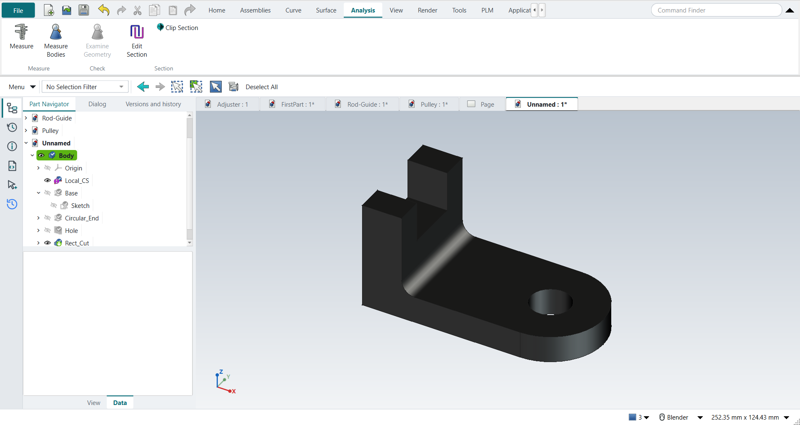

Modeling
The Modeling application is FreeCAD’s PartDesign workbench with NX’s ribbon. Ctrl+M switches to it from any other application.

A new part
Ctrl+N works like NX’s Model template: the new part already has a Body, ready to sketch on.
Units are millimetres and kilograms (FreeCAD’s Standard schema), whatever FreeCAD itself was set to; see units in Settings.
The part gets its name at the first save (Ctrl+S).
Files are FreeCAD .FCStd files, not .prt.
The feature workflow
The Home tab’s Feature group works the NX way:
-
Start the feature: X for Extrude, or Revolve, Hole, Extrude (Subtract), Revolve (Subtract).
-
With nothing selected, pick a plane or a face; a sketch opens on it. With a face or datum plane already selected, it opens there at once; with a sketch selected, the feature starts from that sketch.
-
Draw the section (Sketching).
-
Ctrl+Q (Finish Sketch) carries straight on into the feature’s dialog.
-
Type the values and press MB2 (or OK).
Unite and subtract
NX’s Extrude has a Boolean option; FreeCAD’s has not.
-
Features in one Body unite by themselves: an Extrude onto the part is NX’s Extrude with Unite.
-
Extrude (Subtract) and Revolve (Subtract) are their own buttons (FreeCAD’s Pocket and Groove). They cut into the part by default, so NX’s Reverse Direction is rarely needed.
-
Unite / Subtract in the Feature group combines separate bodies.
Extrude limits
| NX | FreeCAD (in the Extrude dialog) |
|---|---|
Value |
Dimension |
Symmetric Value |
Symmetric (the value is the total width, as in NX since NX 1926) |
Start and End limits on both sides |
Two sided (a length each way) |
Until Next |
To first |
Until Selected |
Up to face |
Through All |
Through all |
| To first and Up to face into a hole stop 1 mm into the part in FreeCAD 1.1.4 (Known issues). Tutorial L shows the workaround. |
Datums
Feature › Datum has Datum Plane, Datum Axis, Point and Datum CSYS.
-
The Body has its own origin (XY, XZ and YZ planes and the axes). NX-Style keeps it hidden and FreeCAD shows it while you pick a sketch plane.
-
At Angle datum planes rotate about the face’s own axes in the attachment offset; NX lets you pick the hinge axis (Tutorial C).
-
Datum CSYS with nothing selected asks whether to continue without an attachment; NX places it at the WCS (Tutorial E).
Holes
Hole drills at the circle centres of a sketch on a face. Select the face (or a datum plane), click Hole, place the centres in the sketch with O and D, and Ctrl+Q continues into the Hole dialog. NX places a hole by its point and adds the location dimensions by itself.
Edge Blend, Chamfer, Draft, Shell
These are FreeCAD’s Fillet, Chamfer, Draft and Thickness. Select the edges or faces first, then the command.
| In FreeCAD 1.1.4, Shell can fail after Edge Blend on the same edges. Shell first, then blend (Tutorial F). |
Patterns and mirror
NX has one Pattern Feature with a Layout list; FreeCAD has separate buttons.
| NX layout | Button |
|---|---|
Linear |
Pattern Feature (FreeCAD’s Linear Pattern); Direction 2 is a tick box in the same dialog. NX’s negative pitch is FreeCAD’s spacing with Reverse. |
Circular |
Circular Pattern; the axis is chosen from a list in the dialog. |
Several at once |
Multi-Transform |
Mirror Feature: select the feature first, then start the command. Inside a Body the mirror unites by itself.
Design changes
-
Edit Parameters (or double-click the feature in the Part Navigator) reopens the feature’s dialog. NX also lets you edit a dimension shown in the graphics window; here the change goes through the dialog or the sketch.
-
F2 or MB3 › Rename in the Part Navigator gives a feature a name.
-
Make Current Feature rolls the part back to that feature; later features wait until you make the last one current again.
-
Suppress switches a feature off and on again (NX’s Suppress and Unsuppress). FreeCAD keeps the feature’s links in its properties; Tutorial M shows parent/child behaviour.
-
Update Model recomputes.
Later features follow a change, including a fillet added to the first sketch afterwards (Tutorial E).
Expressions
Ctrl+E opens the Expressions sheet: a FreeCAD spreadsheet named Expressions, with names in one column and values in the next.
A dimension uses a name as =Expressions.L.
Change the value in the sheet and the part follows (Tutorial K).
FreeCAD refuses names that are unit symbols: the newton N becomes N_holes, for example.
Materials and mass
-
Select the body and click Render › Material › Assign Material. Pick the material; the choice applies at once, and the dialog closes with Close.
-
Analysis › Measure › Measure Bodies shows volume, surface area, the material and density, mass and centre of mass in an Information window, in mm³, mm² and kg.
FreeCAD’s own Measure has no mass; Measure Bodies is NX-Style’s. FreeCAD 1.1 also applies the material’s appearance, so a steel body renders nearly black.
Associative copy, surfaces, synchronous modeling
-
WAVE Linker, Extract Geometry and Clone Body are FreeCAD’s sub-shape binder, shape binder and clone.
-
The Surface tab holds Through Curves, Swept, N-Sided Surface and the sheet operations from FreeCAD’s Part and Surface workbenches.
-
Synchronous Modeling is limited to Delete Face (FreeCAD’s Defeaturing).
The full list of buttons is in NX command to FreeCAD command.